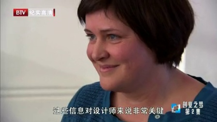

《BBC之创业之梦》有六集，貌似之前在央视高清记录片播出过。刚看了前两集，牛肉饼，辣酱,原来都是家庭作坊制品，在这个节目里，#创业#团队会得到两个创业导师的指点，以及专家团队的帮助，把这些消费品推向全国。
几个观后感：
1 专业团队包括包装设计，品牌策划。这是很多团队缺乏的。
2 创业导师让团队最的第一件事情都是市场调查，虽然这些产品之前都有用户，但农贸市场，区域市场和超市的销售非常不一样，用户特点也有不同。而且，不经过更大规模的用户一对一接触，这两个创业团队对自己产品都过于自信。
3 创业导师在众多候选团队中做选择时，更多是考虑特点，产品后面是不是有故事可讲。会讲故事是个优势。至少，也得有故事可挖掘。
4 创业团队的核心是产品，创业导师及专业团队提供的是市场营销方面的帮助。这让我反思下自己的项目，我的产品是什么？
 辛一家·辣酱 @优酷
辛一家·辣酱 @优酷
几个观后感：
1 专业团队包括包装设计，品牌策划。这是很多团队缺乏的。
2 创业导师让团队最的第一件事情都是市场调查，虽然这些产品之前都有用户，但农贸市场，区域市场和超市的销售非常不一样，用户特点也有不同。而且，不经过更大规模的用户一对一接触，这两个创业团队对自己产品都过于自信。
3 创业导师在众多候选团队中做选择时，更多是考虑特点，产品后面是不是有故事可讲。会讲故事是个优势。至少，也得有故事可挖掘。
4 创业团队的核心是产品，创业导师及专业团队提供的是市场营销方面的帮助。这让我反思下自己的项目，我的产品是什么？

445次播放
06:22